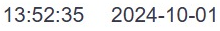

Faceplate Runtime
Введение
Эта инструкция разработана для операторов и технических специалистов, работающих с системой SCADA/EMS в среде RunTime. Она охватывает ключевые аспекты: работу с мнемосхемами, создание и настройку трендов, управление пользователями и экспорт данных. RunTime — это режим реального времени в SCADA-системах, предназначенный для постоянного мониторинга и управления объектами энергетики. В режиме RunTime происходит сбор данных с оборудования, их обработка и отображение на мнемосхемах и графиках для оперативного принятия решений. Этот режим позволяет операторам мгновенно реагировать на изменения параметров системы, контролировать состояние оборудования и предотвращать аварийные ситуации.
Основные возможности RunTime:
Мониторинг в реальном времени — сбор и отображение данных об электроэнергетическом режиме, таких как напряжение, ток, частота, мощность и другие параметры.
Управление оборудованием — дистанционное управление коммутационными аппаратами, трансформаторами и другими элементами энергосистемы.
Анализ данных и тренды — возможность отслеживания изменения параметров системы во времени с помощью графиков и трендов.
Оповещение и сигнализация — система уведомлений, предупреждающая оператора о возникновении нештатных ситуаций или аварийных состояний.
Данная инструкция разработана с целью:
Обеспечения операторов и технических специалистов понятным руководством по настройке и использованию мнемосхем, трендов и других элементов визуализации в SCADA-системе в режиме реального времени (RunTime).
Стандартизации процессов создания графических схем и их взаимодействия с системой, что поможет упростить и унифицировать работу с данными в SCADA.
Улучшения оперативного контроля и управления за энергетическими объектами, предоставляя пошаговые инструкции по настройке и поддержке визуализаций и трендов.
Минимизации ошибок и ускорения принятия решений за счёт четко описанных процедур, позволяющих операторам быстро ориентироваться в системе и реагировать на изменения параметров.
Цель данной инструкции - описать процесс настройки и использования мнемосхем, трендов и других элементов визуализации в системе SCADA/EMS в режиме RunTime. Инструкция содержит пошаговые руководства по конфигурации графических элементов, настройке данных и систем оповещений, а также рекомендации по поддержке и обновлению этих элементов.
Инструкция предназначена для следующих категорий пользователей:
Операторы диспетчерских центров — специалисты, ответственные за мониторинг и управление энергетическими объектами в реальном времени с использованием SCADA-системы.
Инженеры по эксплуатации — технический персонал, занимающийся обслуживанием оборудования и поддерживающего работоспособность системы в режиме RunTime.
Специалисты по автоматизированным системам управления (АСУ) — профессионалы, настраивающие и поддерживающие SCADA-системы, обеспечивающие интеграцию оборудования и данных для эффективного управления процессами.
Инженеры и техники ИТ-поддержки — специалисты, занимающиеся администрированием серверов SCADA, сетевого оборудования и систем связи.
Эта инструкция полезна тем, кто взаимодействует с системой SCADA для обеспечения контроля, управления и визуализации данных в режиме реального времени.
Список определений, обозначений и сокращений
SCADA (Supervisory Control and Data Acquisition) — система диспетчерского управления и сбора данных, предназначенная для мониторинга и управления энергетическими процессами в режиме реального времени.
RunTime — режим работы SCADA-системы в реальном времени, обеспечивающий непрерывный сбор, обработку и отображение данных.
Мнемосхема — графическое изображение энергетической системы, отображающее состояние оборудования и параметры в реальном времени.
Тренды — графическое представление изменений параметров системы (напряжение, ток, частота и т.д.) в реальном времени или за определённый период времени.
ТИ (Телеизмерение) — данные о величине параметров технологического процесса, передаваемые дистанционно в систему SCADA.
ТС (Телесигнализация) — передача данных о состоянии оборудования (включено/выключено, аварийное состояние и т.д.).
АТ (Автотрансформатор) — трансформатор с общей обмоткой для первичной и вторичной цепи, используемый для изменения уровня напряжения в электрической сети.
ЛЭП (Линия электропередачи) — система проводов и оборудования, предназначенная для передачи электроэнергии от генераторов к потребителям.
НДЦ — Национальный диспетчерский центр.
РДЦ — Региональный диспетчерский центр.
ЛКМ — Левая кнопка мыши
ПКМ — Правая кнопка мыши
Интерфейс пользователя и навигация
Для запуска Runtime необходимо в адресной строке браузера (Google Chrome, Mozilla Firefox, Yandex Browser, Apple Safari, Opera) ввести следующую строку:
x.x.x.x:9000/fp/runtime
где x.x.x.x - IP-адрес соответствующего узла (НДЦ или РДЦ).
Далее появляется окно авторизации, в котором оператор должен ввести свои учетные данные — логин и пароль:
Если авторизация прошла успешно, то открывается главное окно Runtime:
Рисунок 1.
Главное окно представляет собой рабочую область, в которой отображаются мнемосхемы, тренды и элементы управления системой. Это центральное место, где оператор выполняет основные действия по мониторингу, управлению объектами и анализу данных.
Панель навигации
На верхней панели, непосредственно под адресной строкой расположены следующие элементы управления:
Боковое меню: Позволяет открыть боковое меню, где есть возможность: -Открыть древовидный список доступных мнемосхем, что позволяет оператору выбирать и переключаться между различными мнемосхемами. -Открыть журнал сообщений, который используется для работы с историческими сообщениями и событиями, зафиксированными системой. -Открыть диалог выбора трендов, где можно создать, настроить и просматривать тренды. -Вернуться в среду разработки Studio. -Завершить работу с системой и выйти из интерфейса. | |
|---|---|
История открытия схем: Позволяет оператору просматривать предыдущие действия по открытию схем. | |
Список сообщений: Обеспечивает быстрый доступ к списку сообщений для анализа и работы. | |
Навигация по иерархии схем: При нажатии стрелок «влево» и «вправо» открывается следующая или предыдущая навигационная схема по уровню иерархии. | |
Текущая схема: Отображается на экране с названием, указывающим на открытую в данный момент схему. | |
Функция зума: Доступна для увеличения и уменьшения масштаба схем. | |
 | Текущие дата и время: Отображаются на экране в реальном времени. |
Режим работы системы: Отображает состояние режима работы системы (Run — Runtime запущен, Stop — остановлен). | |
Имя пользователя: Информация о текущем пользователе, работающем в системе. | |
Избранные схемы: Доступ к избранным схемам, которые предварительно настраиваются администратором в Studio. | |
где - навигационная схема, а | |
Кнопки быстрой навигации: Обеспечивают удобный доступ для перехода между схемами. | |
Данные из полей SE: Галочки отображают на выбранной схеме данные из полей модуля оценки состояния (SE). | |
Навигационная мнемосхема и её использование
Навигационная мнемосхема представляет собой интерактивную схему, которая отображает состояние системы в реальном времени и позволяет быстро переходить к детализированным объектам.
Рисунок 2.
Быстрый доступ: Двойной клик правой кнопкой мыши на объект (например, узел АЛМА) открывает дополнительную информационную панель о характеристиках объекта:
При клике левой кнопкой мыши на том же элементе открывается мнемосхема, которую также можно открыть через боковое меню (п. 3.1):
Рисунок 3.